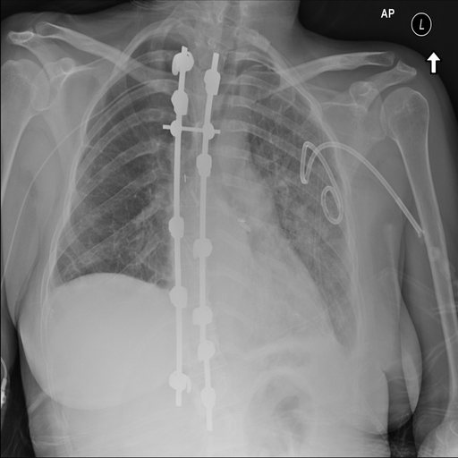
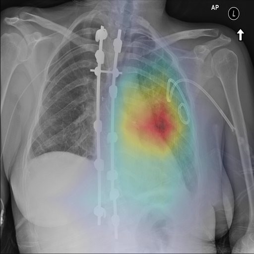

CHEST X-RAY
PA · public dataset
PA · public dataset
Grad-CAM
TorchXRayVision
TorchXRayVision
◂ original
heatmap ▸
Agentic AI · Radiology
Multi-agent radiology reporting
Four LangGraph agents analyse the X-ray, pull clinical context and prior reports, draft a structured report and check it for missing sections and unsupported findings. A radiologist approves every report before it is final.
0.91QA validation score
4agents + human review
LangGraphClaudeQdrant RAGMCPFastAPIAWS ECS